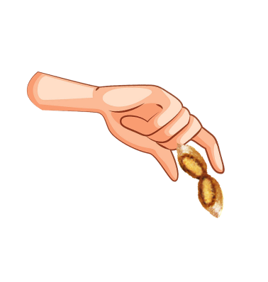
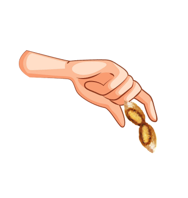

КОШАЧИЙ СЛЕД В ИСТОРИИ
СПОЙЛЕР *
Эти истории могли однажды произойти в домах великих учёных, поэтов и художников. Ведь все они были ещё и великими почитателями котов!


Коты, живущие возле человека, всегда делали его жизнь уютнее, мягче и веселее. Они сопровождали великих мореплавателей в море, охраняли рукописи и картины от мышей, были рядом даже в самых сложных ситуациях.


Задумывались ли вы когда-нибудь о том, что роль кошек в истории человечества намного важнее, чем просто домашний питомец? А что, если бы коты оставили свой след во многих областях деятельности человека, в том числе внеся свою лепту в великие открытия?
Непослушная кошка и закон всемирного тяготения
А было ли яблоко?
В 60-х годах XVII века молодой, но уже довольно известный английский ученый Исаак Ньютон неспешно работал в родовой усадьбе Вулсторп. День выдался настолько погожий, что ученый решил обустроить себе рабочее место в тени яблони в саду. Его пушистый кот тоже с радостью вышел поиграть на свежем воздухе.
Однако хозяин склонился над уравнениями и совсем не обращал внимания на любимца.


Принцип плавучести и закон Архимеда
Если бы кошки умели плавать


Астрономический кот
и бесконечное пространство
Насколько широко может разлечься кот?


Кубизм и черные кошки
Умел ли Пикассо рисовать котиков?
 
Озорной кот и открытие Америки